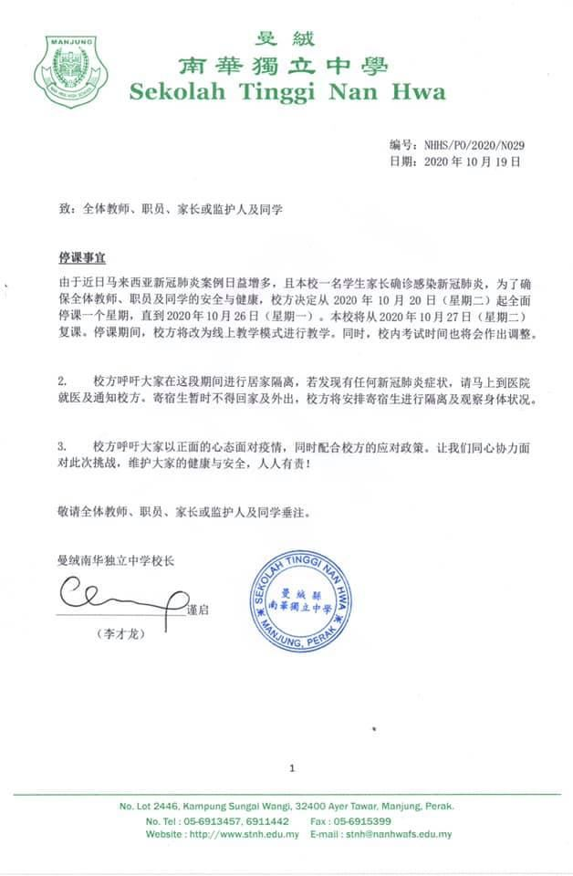

由于我国的疫情案例有不断增多的趋势，且本校一名学生家长确诊感染新冠肺炎，为了确保
由于我国的疫情案例有不断增多的趋势，且本校一名学生家长确诊感染新冠肺炎，为了确保全体教职员及学生的安全和健康，本校决定停课一周，改为线上教学。校方希望大家能够全力配合，一起携手抗疫，保护自己和身边的人！

由于我国的疫情案例有不断增多的趋势，且本校一名学生家长确诊感染新冠肺炎，为了确保全体教职员及学生的安全和健康，本校决定停课一周，改为线上教学。校方希望大家能够全力配合，一起携手抗疫，保护自己和身边的人！
